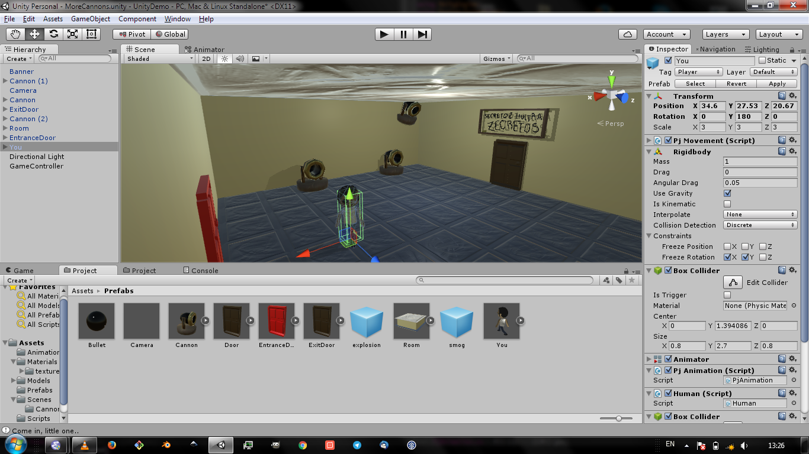
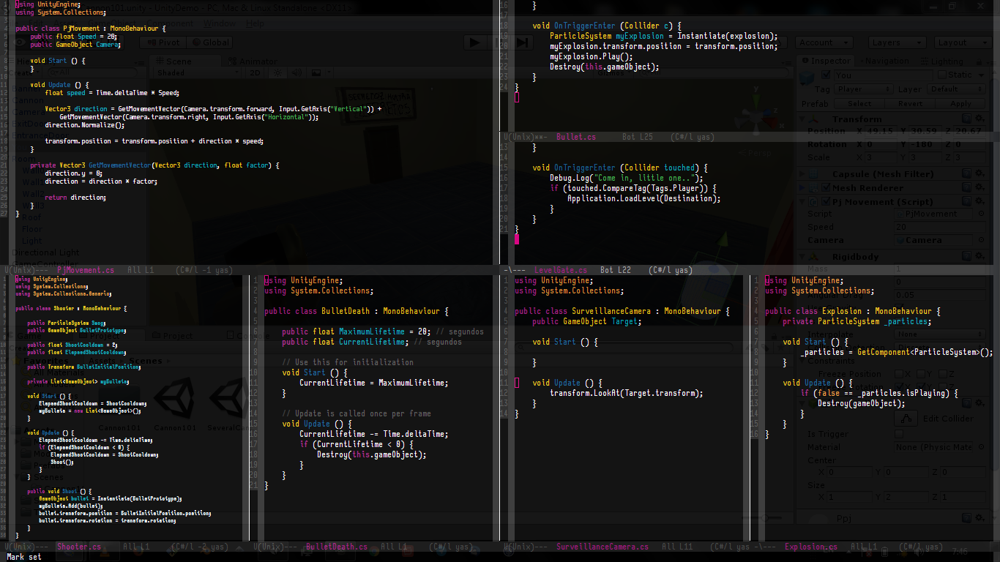

Un juego en unity se ve completamente distinto de un juego en phaser! fuera de que phaser no soporta aún 3D, unity es más "visual".
Si te encanta programar, no te descepciones de que unity se vea tan "visual", porque el código también es muy potente. En phaser, todo se maneja mediante código, en unity, en cambio, puedes manejar las cosas mediante código, pero también visualmente.
Este es el código de este juego...
En unity, cualquier objetito que haces es reusable. Por ejemplo, ese cañoncito que dispara? hice uno de ellos, y lo convertí en un prefab! luego ya puedo poner varios de ellos donde quiera... créeme, no es difícil y más adelante te enseñaré a hacerlo ;)
Las variables públicas del código también son manejables desde lo "visble", más adelante, también aprenderemos a hacer esto.
Puedes "clonar" el juego desde github... y si te da flojera descargarlo, ver el código y compilarlo para jugar, también puedes descargar el ejecutable para windows, para linux y para mac :).